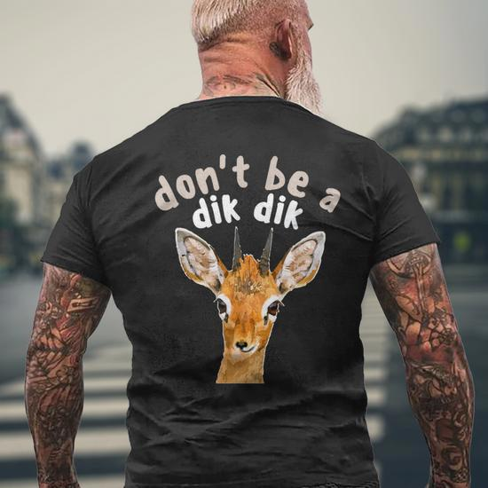

YES, THEY'RE REALLY CALLED "DIK-DIKS"
Not a joke. That's the actual name. It comes from the squeaky "dik-dik!" noise they make when scared. Nature has a sense of humor.
THEY'RE CAT-SIZED DRAMA QUEENS
They're as tall as a housecat, but they strut around the savanna like they own the place.
Tiny royalty.
THEIR EYES TAKE UP HALF THEIR FACE
Their eyes are so big it's like they just saw how much rent costs in New York.
THEY CRY... FASHIONABLY
The black streaks under their eyes aren't from watching sad movies — they're scent glands.
But hey, it's a look.
THEY HAVE AIR CONDITIONERS FOR NOSES
Their long snoots cool the air as they breathe — built-in AC. Dyson could never.
GROOMING IS EVERYTHING
They love keeping each other clean. Couples' spa day every day.
MARRIED FOR LIFE — NO GHOSTING HERE
Once a dik-dik finds a partner, that's it. Forever. They don't even take breaks — one
leaves, the other stands guard like a security camera.
THEY POOP IN FAMILY BATHROOMS
Dik-diks use shared poop piles. Yep. Communal toilets. It's a bonding experience.
THEY'RE SCARED OF... BASICALLY EVERYTHING
A falling leaf? Panic. A sneeze? Panic. Their own reflection? Probably also panic.
THEY LOOK LIKE PLUSH TOYS WITH ANXIETY
Honestly, if you saw one on a shelf at IKEA, you'd assume it was a stuffed animal named
Smölfrän.
THEIR SURVIVAL PLAN: STAY HIDDEN FOREVER
If the savanna was a party, the dik-dik would be hiding behind the couch with
snacks.
THEY'RE INTERNET MEMES
